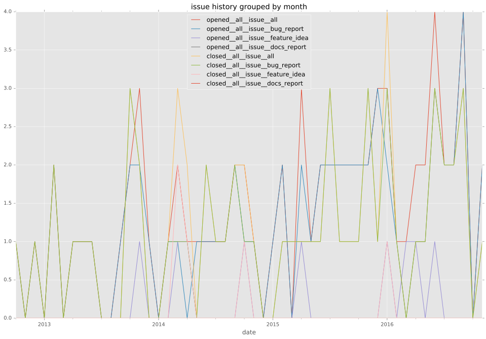
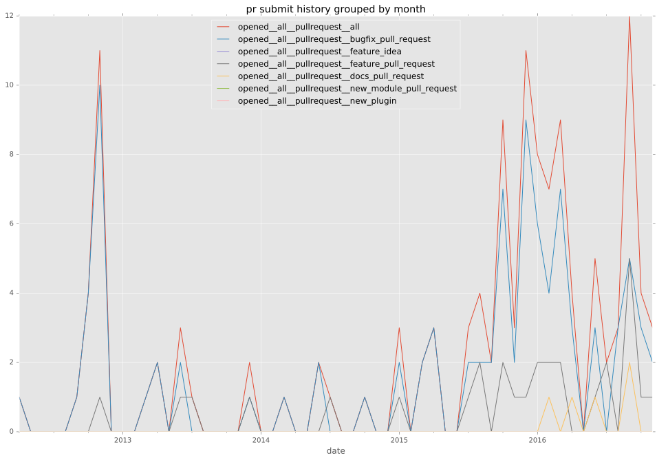

authors
maintainers
- ansible
contributors
- mpdehaan : 7 commits
- willthames : 2 commits
- abadger : 1 commits
- lllama : 1 commits
- stoned : 4 commits
- jpmens : 10 commits
- lgiordani : 1 commits
- mikeputnam : 1 commits
- mavimo : 9 commits
- gitaarik : 2 commits
total issue counts
bugfix pull request: 101
docs report: 2
documentation pull request: 1
pullrequest: 124
docs pull request: 4
feature pull request: 18
feature idea: 6
issue: 71
bug report: 63
issue history

pullrequest history

days open by issue type
feature pull request
count: 28
std: 101.565699278
min: 0
max: 437
median: 1.5
mean: 45.9642857143
all
count: 242
std: 80.0382688551
min: 0
max: 861
median: 0.0
mean: 18.7272727273
documentation pull request
count: 1
std: nan
min: 0
max: 0
median: 0.0
mean: 0.0
pullrequest
count: 0
std: nan
min: nan
max: nan
median: nan
mean: nan
docs pull request
count: 4
std: 4.61880215352
min: 0
max: 8
median: 4.0
mean: 4.0
docs report
count: 1
std: nan
min: 861
max: 861
median: 861.0
mean: 861.0
bugfix pull request
count: 148
std: 18.4145886913
min: 0
max: 111
median: 0.0
mean: 5.39189189189
feature idea
count: 3
std: 71.3185342904
min: 0
max: 125
median: 3.0
mean: 42.6666666667
issue
count: 0
std: nan
min: nan
max: nan
median: nan
mean: nan
bug report
count: 57
std: 88.9781202865
min: 0
max: 606
median: 1.0
mean: 25.298245614
closures grouped by total days open